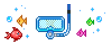

under strict cladistics, all tetrapods are fish. they are within euteleostomi, the clade that tetrapods belong to. this may pose the question, does fish have any meaning at all? no. fish is a paraphyletic group. this project uses the monophyletic definition of fish, meaning that if it has bones and a jaw, it is a fish. you are a highly specialized lobe finned fish.
this tool will never count the nodes 100% accurately, as im building the database by hand, and can't possibly account for every clade, order, family, genus, and species in the world. the database also only includes extant (living) species, because i don't really care about the extinct mongolian red donglefish. also note that phylogeny and taxonomy are not set in stone subjects. they change all the time. just look at crabs! they're always changing crabs. this is for fun and im in highschool. lighten up.